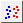

Erfordert mindestens eine Y-Spalte als Eingabedaten. Außerdem enthält/enthalten eine oder mehr Spalte(n) Gruppierungsinformationen.
Wählen Sie die erforderlichen Daten aus.
Oder:

auf der Symbolleiste 2D-Grafiken.Der Dialog plot_gscatter wird geöffnet:
Sie können den Eingabedatenbereich auswählen, mindestens eine Gruppenspalte hinzufügen, optional Spalten auswählen, um Seiten/Felder zu teilen, optional Anpassungskurven hinzufügen und bestimmen, wo die Zeichnungsdaten und Diagramme abgelegt werden sollen. Klicken Sie auf Vorschau oder OK, um Ihre Zeichnung zu erstellen und den Dialog zu schließen.
| Datenspalte(n) | Dieser Zweig wird zum Festlegen der Eingabedaten verwendet. |
|---|---|
| Gruppenspalte(n) | Wählen Sie die kategoriale(n) Spalte(n) als Gruppierungsspalte(n). |
| Diagrammanordnung |
|
| X teilen/Y teilen | Aktivieren Sie das Kontrollkästchen, um die X/Y-Skalierung zwischen den Diagrammen und Layern zu teilen. |
| Diagrammtyp | Legen Sie den Diagrammtyp, Punkt, Linie oder Punkt-Linie, fest. |
| Stapeln | Legen Sie fest, ob die Säulen/Balken gestapelt werden sollen, wenn sich mehrere Eingabevariablen in der gleichen Grafik überlagern. Sie können Nebeneinander, Gestapelt oder Gestapelt, 100% wählen. Diese Option ist für den Diagrammtyp Punktdiagramm nicht verfügbar. |
| Diagrammmvorlage | Legen Sie ggf. eine Anwendervorlage fest. Per Standard ist das Kontrollkästchen Auto aktiviert und die Standardvorlage GBOX wird verwendet. |
| Anpassen |
Dieser Zweig wird verwendet, um angepasste Kurven oder Bänder mit Referenzlinien zu erstellen. Hier ist nur die polynomielle Anpassung verfügbar.
|
| Daten ausgeben | Legen Sie fest, wo die berechneten Daten ausgegeben werden. |
| Diagramme ausgeben | Legen Sie fest, in welches Blatt die Ergebnisdiagramme ausgegeben werden. |
| Hinweis: Der Gruppierungsbereich wird anhand der alphabetischen Standardreihenfolge sortiert. Sollte dies nicht akzeptabel sein, markieren Sie die Arbeitsblattspalte, klicken Sie mit der rechten Maustaste und setzen Sie sie als kategorisch. Sie können dann die Listenreihenfolge auf der Registerkarte Kategorien modifizieren. |
SCATTER.OTPU (installiert im Origin-Programmordner)